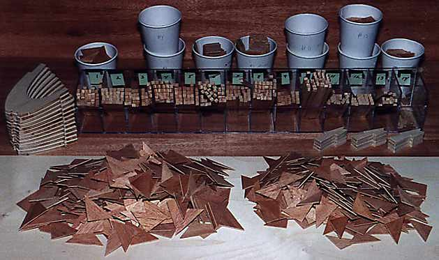

|
Believe it or not, nearly 30 hours of work is repesented by this photo. As much as I could, I tried to make fixtures for cutting each piece as accurately, and easily as possible. For instance, all the truss members were cut using custom miter boxes, to alieviate the need for sanding each piece for final fitting. The miter boxes were made by ripping pieces of pine to an H-cross section. One set of trusses was carefully made, and then used as patterns for cutting the slots and angles in the miter boxes.
The gussets are 1/16 Mahogany plywood, cut on a table saw with a sliding tray configured for proper angles for each piece. One time saving hint mentioned that gussets are not precision devices. A standard Hatz rib has 17 gussets, nearly all are drawn to slightly different shapes. By allowing some to run a little larger, and get trimmed later when the ribs are being sanded anyway, I was able to get away with just 2 sizes of triangles for 11 locations. These are clearly seen in the photo as the two large piles in the foreground. The paper cups hold the other 6 "custom" gussets. After gluing, any overhanging gussets and glue drips are removed with a quick pass on a disk sander. The curved ply pieces to the left were rough cut on a scroll saw, then final shaped by clamping to a pattern, and running around them with a ball bearing guided router bit. The odd pieces on the right join the trailing edge ends of the capstrips, and were cut on a table saw using a 7 step sliding tray jig. |
Copyright 1998, Thayer Syme. All rights reserved